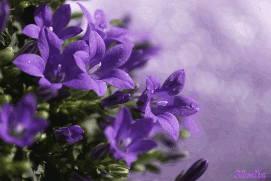
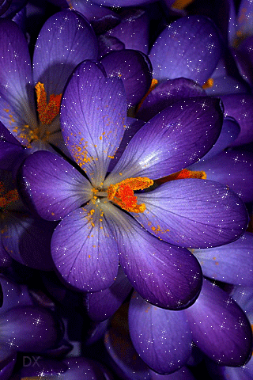
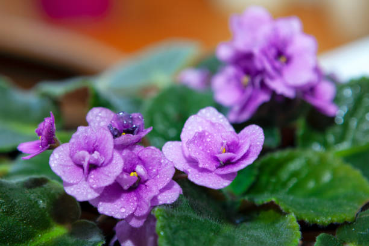
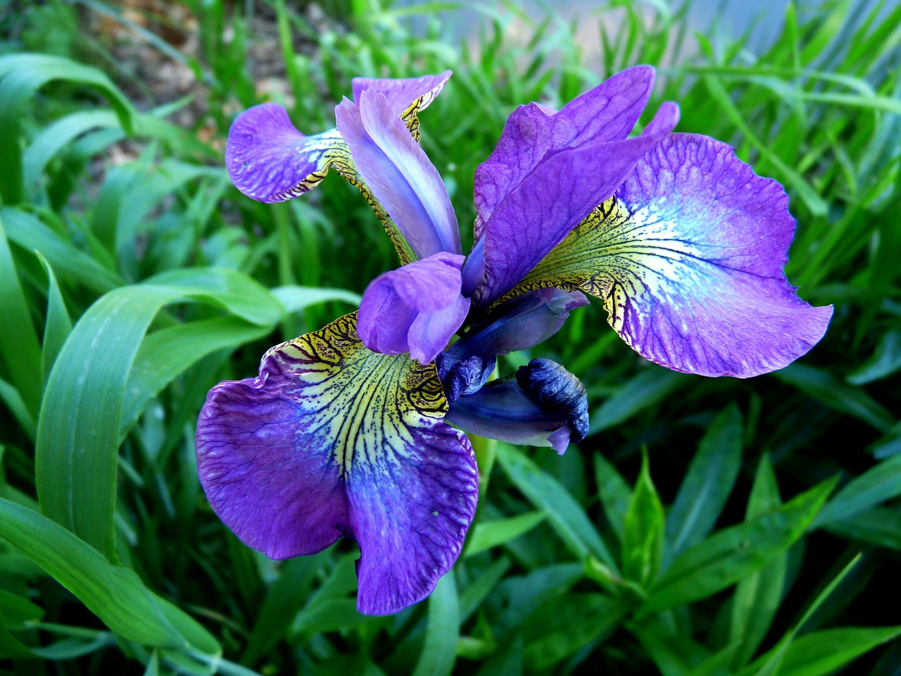

Violet
As violetas são flores encantadoras conhecidas por suas cores vibrantes, delicadeza e beleza cativante. Originárias da Ásia e Europa, essas pequenas maravilhas pertencem à família Violaceae e têm uma longa história de cultivo e apreciação. Com uma ampla variedade de cores e formas, as violetas são uma adição encantadora a jardins, vasos e arranjos florais. Sua popularidade como planta ornamental é atribuída à facilidade de cultivo e ao encanto de suas flores.
Características e Variedades:
Flores Delicadas: As violetas são conhecidas por suas flores delicadas, de formato singular. Elas têm cinco pétalas, com duas pétalas superiores, duas laterais e uma inferior, que é frequentemente maior e mais decorativa.
Variedade de Cores: As violetas estão disponíveis em uma ampla gama de cores, incluindo tons de roxo, azul, rosa, branco e amarelo. Algumas variedades têm pétalas com padrões contrastantes, como listras e manchas.
Folhagem Atraente: Além das flores, as violetas também apresentam uma folhagem atraente, com folhas verdes em forma de coração que crescem em rosetas compactas e bem definidas. Hábito de Crescimento: As violetas geralmente crescem em pequenas touceiras, formando agrupamentos densos e encantadores de flores e folhas.
Perfume Suave: Algumas variedades de violetas têm um perfume suave e doce que acrescenta ainda mais charme a essas flores.
Habitat e Cultivo:
Origem e Distribuição: As violetas são nativas de regiões temperadas da Ásia e Europa, mas agora são cultivadas em todo o mundo como plantas ornamentais.
CCultivo em Vasos: As violetas são populares como plantas de interior e podem ser cultivadas em vasos em ambientes domésticos. Elas preferem luz indireta e solos bem drenados.
Rega Adequada: As violetas preferem umidade constante, mas não devem ser encharcadas. A rega deve ser moderada para evitar o apodrecimento das raízes.
Fertilização: As violetas respondem bem à fertilização, mas é importante não exagerar. Fertilizantes balanceados específicos para plantas de interior são recomendados.
Temperaturas Moderadas: Essas plantas preferem temperaturas moderadas, evitando tanto o calor excessivo quanto o frio intenso.
Usos e Aplicações:
Decoração Interior: As violetas são populares como plantas de interior devido ao seu tamanho compacto e belas flores. Elas adicionam um toque de cor e elegância a ambientes domésticos e de trabalho.
Presente Significativo: As violetas são frequentemente dadas como presentes simbolizando carinho, admiração e afeto. Elas expressam sentimentos verdadeiros de amizade e amor.
Conexão com o Passado: As violetas são associadas a lendas e histórias antigas, tornando-as uma escolha popular para jardins com temática histórica.
Uso Medicinal: Algumas variedades de violetas têm sido usadas na medicina tradicional para tratar problemas respiratórios e de pele.
Conclusão: AAs violetas são uma prova de que beleza vem em pequenos pacotes. Com suas flores encantadoras e cores vibrantes, elas cativam os corações de entusiastas de jardinagem e colecionadores em todo o mundo. Seu cultivo é uma atividade prazerosa e gratificante, trazendo um toque de natureza e elegância aos espaços interiores. Além de seu valor estético, as violetas têm um significado especial como presentes e uma rica história cultural que as torna ainda mais especiais.